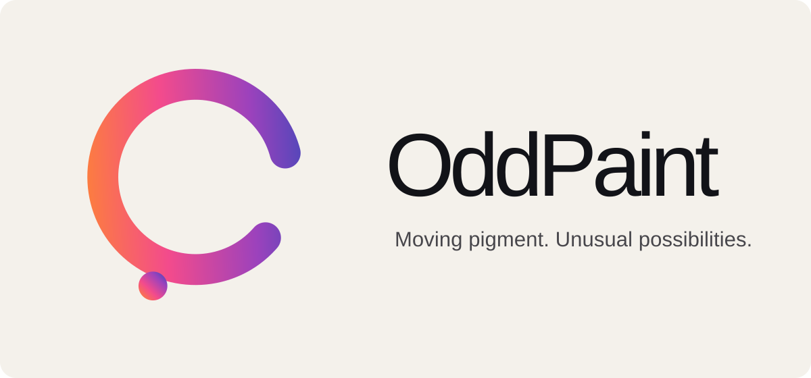

A machine by Travers MacMaster
OddPaintLiving Canvas for Images & Video
OddPaint is a Living Canvas for painting images and video with Image Brush, Living Brush, shared masks and damage effects. Keep pigment alive while you work, then bake it to the canvas when ready. The five modular processing engines remain in the separate Experimental Processing Studio.

What you can make
Living Canvas for Images & Video
Make still and moving image studies by painting imported media as pigment, keeping video regions alive, and shaping the canvas with masks and damage tools.
How the process works
Paint images or video with Image Brush and Living Brush, use shared masks to target regions, and shape the canvas with damage effects. The processing engines run in the separate Experimental Processing Studio, which works independently of OddPaint.
Inputs and source material
Import images, video or camera clips into source wells and paint them as pigment.
Save and export
Save editable projects and export PNG, JPG or WebP stills and WebM motion in the browser. Supported browsers preserve timed-export cadence. The Windows application also supports MP4 and GIF.
Getting started
How to use OddPaint
- 01Open OddPaint in the browser and import an image, video or camera clip into a source well.
- 02Choose Image Brush or Living Brush, then paint source pigment onto the Living Canvas. Use masks and damage tools to shape the result.
- 03Keep the canvas alive while working, or bake it when you want to commit the current living pigment.
- 04Export a still image or the complete video. For the modular processing engines, open the separate Experimental Processing Studio.
Output examples

From the same studio